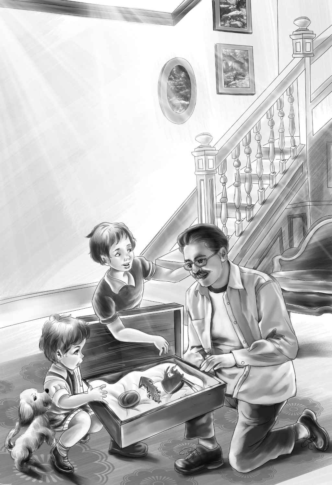

Grandfather’s Visit
“我们得在十点前准备好，”第二天早晨杰西说，“爷爷让丹尼尔船长十点开摩托艇去接他，他一直都很守时的。”
“一定得让他看看咱们的博物馆，”亨利说，“我知道他对印第安人的东西很感兴趣，但对于花草和小鸟，我就不敢肯定了。”
“我觉得他会喜欢咱们的博物馆的，”维莉说，“门上还有他的名字呢。”她抬起头来，念了一遍：“詹姆斯·H·奥登博物馆。”
“都准备好啦，”杰西说着又看了最后一眼，“咱们这就去码头接他吧。”
奥登先生看到孩子们站在码头上朝自己挥手，非常高兴。
“真是一群好孩子。”他对丹尼尔船长说。
“是我见过的最好的孩子。”丹尼尔船长也朝他们挥起手来。他将船拴到码头上，看着奥登先生欢欢喜喜地跟着这群开心的孩子往马厩走去。
“我想把你们所有的战利品都看一遍。”他坐在客人专用的椅子上，打量了一下四周，“呵，那是什么？一个博物馆？”奥登先生惊讶不已。
说完，爷爷便站了起来。“可以让我看看吗？”他朝楼上看去，兴奋地问。
“您要是不嫌热的话，当然可以呀！”杰西说，“这上面可真是热死啦。”
“不，我不介意。”说着，奥登先生已经来到了楼梯顶上。他一眼就看到了博物馆的全貌。“这个点子是谁想出来的？跟我说说。”
大家告诉了他建博物馆的始末，还向他展示了花草、海藻、盒子里的贝壳和蝴蝶，还有真树上面的纸鸟。
奥登先生盯着那只栖息在鸟巢旁边的蓝色鸟儿看了许久。鸟巢里还有四颗用纸剪出来的蓝色鸟蛋。
“鸟儿们飞走了，留下了这个窝，”亨利说，“所以我们就捡了回来。”
“很好！”奥登先生笑容满面地说，“那么，你找到了些什么，班尼？”
“我在贝壳堆那儿找到了一大块骨头。”
“爷爷，我们得跟您说说骨头的事儿！”亨利笑着说，“咱们下楼吧，您可以坐在靠背椅上听。是这样的，我们发现了一副印第安人的骨架，班尼发现了一条腿骨。大乔说这些非常重要，除了您不能跟任何人说。”
“那副骨架在哪儿？”奥登先生诧异地问道。
“在小岛的尽头，就在一大堆贝壳旁边。”
“没错，我记得我小时候就看到过那堆贝壳。”奥登先生说。
“大乔不让我们碰印第安人的骨头，”班尼说，“他说等我们回家后，您会派工人过来挖的。”
“那个大乔似乎懂得很多，”奥登先生说，“我走之前一定要去见见他。”
“您看这个盒子里的东西，爷爷，”班尼说，“这是一枚箭头，那是一把斧头，还有一个吃饭用的碗，全都是印第安人用过的。这个工具是用骨头做成的，是望望发现的斧头和工具。”
“哇，哇！”奥登先生大声赞叹，“谁告诉你们这些的？有人提议你们建博物馆放这些东西吗？”

“没有，”亨利不解地问，“难道您不喜欢吗？”
“喜欢，亨利，我非常喜欢。只是有点不敢相信罢了，因为我小时候也做过一模一样的事呢！我经常一个人去树林里，坐上好几个小时，只是为了听听鸟儿们的叫声。”
“对，”亨利笑了起来，“我们也在做相同的事情。我们和您一样。”
然后，维莉将小提琴拿来给奥登先生看。令大家意外的是，奥登先生将它放到下巴下面，拉了起来。他拉的曲子非常动听。
“你们还不知道我会拉小提琴，对吗？”奥登先生看着目瞪口呆的孩子们，“这是一把非常好的小提琴，维莉。”
“您真是一位神奇的爷爷！”亨利说，“总会给我们惊喜！我们都不知道您还会拉小提琴呢。”
“我已经好久没练习了，”奥登先生将小提琴递还给维莉，感慨道，“甚至有好些年头没摸过小提琴了。现在，你们还有什么要给爷爷看的呢？”
“您真得去小屋里看看大乔。”班尼提醒道。
“我想大乔今天早上去岸上了。”维莉说。
“这真奇怪，”亨利说，“因为他肯定知道您今天要来。”
“这真是太让我失望了。”班尼喊道，“我想让您见见大乔，他是我在这个世界上最要好的朋友啦！”
“那我也要失望了，”奥登先生换了个话题，“你们这儿什么时候开饭？”
“快了，马上！”杰西说，“您饿了吗？”
“我饿得都能吃下一头牛了。”奥登先生俏皮地回答道。
杰西赶紧在大水壶里加了一些水。“你们几个把桌子收拾好，把牛奶倒上，这样饭一做好，爷爷立刻就能吃上了。”
“哦，也用不着这么着急，”奥登先生说，“我还能支撑半个小时呢！”
没到半个小时，蔬菜苗便已经做好了。杰西把它们盛进一个大盘子里，浇上化好的黄油。当然，还有很多面包和黄油可以用来就着蔬菜吃。为了招待客人，杰西还特地在牛奶里加了两个鸡蛋和一些糖。
“汤太好喝了！”奥登先生赞道，“看来我得常来。”
“您一定要来！”维莉赶忙说，“您暂时还不着急回家，对吗？”
“我想我在这儿待不了多久，”奥登先生说，“而且我还想带你们一块儿回岸上——就去一两个小时。”他赶紧补充道。
“好呀，”杰西松了一口气，“我刚刚还以为您要把我们带走，不回来了呢。”
“你们喜欢这里，是吗？放心吧，不会离开太久的。我只是想带你们去看一些东西。”
没多久，丹尼尔船长便将奥登一家子送到了岸上。奥登先生的车停在岸边，孩子们上了车，来到了一座从未见过的高大建筑前。
“是一家博物馆！”亨利喊道，“看，杰西，看呀！”
亨利指了指大门上方的名字，只见上面雕刻着几个巨大的石头大字：
“我的天！”杰西惊呼起来，“这是用您的名字命名的吗，爷爷？”
“我想应该是，”奥登先生说，“它已经在这儿很久了！”
“原来是您出钱建的博物馆！”亨利说。
几个吃惊不已的孩子跟着爷爷走了进去，一位年轻的姑娘领着大家看了爷爷珍藏的所有展品。最后，他们来到了一个小房间门口，姑娘示意他们进去。杰西是第一个看到门牌的人，只见上面写着：
“哎呀呀！”亨利看着几只鸟儿惊叫起来，“我们的鸟和您的一模一样！”
奥登先生的鸟也是画出来的，而且同样栖息在真正的树枝上面。
“这些鸟巢也是鸟儿们废弃了的，”奥登先生眨了眨眼睛，“所以我才捡了回来。”
亨利哈哈笑了起来：“您也不想伤害小鸟，是吧？”
奥登先生接着说：“对，博物馆里面的真鸟全都是死后才送到这儿来的。这个博物馆里没有一只鸟是因为我而死的。好了，现在我该送你们回小岛去洗碗啦。”
大家上了船之后，他给了每个人一个盒子。后来爷爷才想起来，他还是没见到那个叫大乔的帮工。